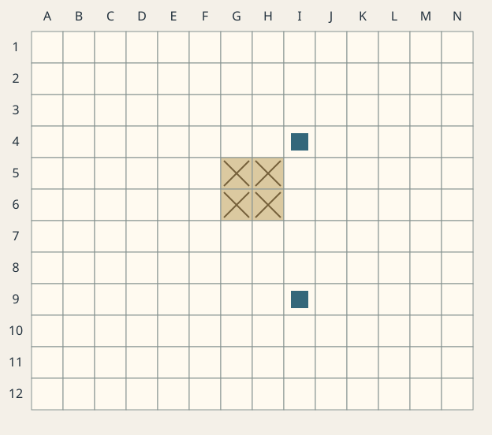

Одинаковые правила, разная история
Все карты совпадают с сеткой нативного пакета: 14 × 12, клетка — 5 футов. G5/H5/G6/H6 — трудная местность; I4/I9 — половинное укрытие. Остальные детали описания декоративны, пока ведущий не изменил поле штатно.
Расстановка и параметры
Герои в порядке списка встречи: B3, B4, B5, B6, C3, C4, C5, C6. Противники: L3, L4, L5, L6, M3, M4. Используйте только нужное число фигур.
Для 3 / 4 / 5 / 6 / 7 / 8 игроков: 2 / 3 / 3 / 4 / 5 / 6 противников, здоровье каждого 12 / 14 / 16 / 18 / 20 / 22. Защита 12; скорость 20 футов; одна ближняя атака +3, 1d4+1 дробящего урона, досягаемость 5 футов.
Перед запуском встречи герои должны находиться в её локации. После сыгранного перехода ведущий перемещает участвующих персонажей обычным действием приложения; герои в других местах автоматически в бой не попадают.
Враги — простая поддерживаемая модель. Мирные решения и ограничения сцены описаны отдельно; ведущий подтверждает их результат. После первого раунда напомните пути переговоров или отступления. Встречи не запускаются автоматически.
Бумажные щёлкуны на витрине
Необязательный эпизод второй встречи: ведущий предлагает его только если стол хочет подвижную сцену. Щёлкуны замечают блестящие подписи проб и начинают перекладывать их; бой не начинается автоматически.
Цель и выходы
Унести три карточки образцов на спокойный край прилавка и оставить понятные подписи. Отступление через южный проход доступно всегда; Езга выдаст копии, поэтому сведения и закупка не зависят от столкновения.
Покажите щёлкунам новую яркую пустую бирку и положите её на отдельную низкую полку. Они добровольно переключаются на складывание узора, позволяя забрать рабочие карточки; бросок не нужен. Можно также спокойно уйти за копиями к Езге или дождаться, пока существа унесут пустые обложки.
Поведение противников
Складчатое сказочное существо размером с чашку, похожее на ожившую бумажную застёжку. Оно хватает только незакреплённые бирки; при исчерпании HP складывается в безвредный комочек и позже расправляется вдали от витрины.
Щёлкуны держатся у свободных подписей и прячутся за пустыми ящиками. Используйте только обычное перемещение и одну стандартную атаку +3 за ход, урон 1d4+1, AC 12; новых способностей нет. Они прекращают спор после переноса карточек либо мирного предложения и не преследуют ушедших героев.
Размер группы
3 игрока: 2 существа, HP 12, две карточки несёт один герой последовательно. 4: 3 существа, HP 14, три задачи распределены свободно. 5: 3 существа, HP 16, отдельный игрок может показывать мирный отвлекающий узор. 6: 4 существа, HP 18, три пары меняются действиями. 7: 5 существ, HP 20, тройка получает перенос, подпись и переговоры. 8: 6 существ, HP 22, четыре пары решают по одному действию за круг. AC 12 и атака +3, 1d4+1 неизменны; никаких дополнительных атак за размер группы.


Поле 14×12 клеток: x от 1 до 14, y от 1 до 12. Центральная область x6–9, y5–8 занята мягкими упаковочными складками и является трудной местностью. Пустые ящики у (3,4), (12,4), (3,9), (12,9) дают обычное укрытие по правилам. Южный проход y12 открыт. Герои начинают у y11, существа на рыночных полках у (5,3), (8,3), (10,3); добавочных размещайте у (4,6), (11,6), (8,9).
Любители лишних складок
Необязательный эпизод пятой встречи: свободные тени привлекают маленьких складкоедов, которые принимают сортировку за приглашение играть. Ведущий предлагает столкновение вместо части работы; оно не запускается автоматически.
Цель и выходы
Перенести подписанный лоток свободных пищевых складок на устойчивый стол, не трогая занятые полотна. Если команда отступает, Ганна выдаёт такую же партию со второй полки за уже согласованный жетон; основная закупка никогда не заперта боем.
Спросите Ганну о свободной несъедобной обрези и сложите из неё широкий игровой завиток на пустом коврике. Материал выдаётся сразу и не отнимает праздничных порций. Существа принимают предложение без проверки. Другой путь — закрыть лоток обычной крышкой и спокойно передать его по защищённому краю стола.
Поведение противников
Пушистый завиток из несъедобной для людей облачной тени с двумя весёлыми углублениями вместо глаз. При исчерпании HP расправляется в мирную ленточку и уплывает под навес; натуралистических повреждений нет.
Складкоеды перемещаются к незанятому краю лотка и заслоняют его собой, не получая особых захватов или реакций. Используйте одну стандартную атаку +3, урон 1d4+1, AC 12. Когда лоток убран или получен отдельный игровой материал, существа теряют интерес и прекращают столкновение.
Размер группы
3 игрока: 2 существа, HP 12; один ведёт лоток, двое выбирают проход или мирный завиток. 4: 3 существа, HP 14. 5: 3 существа, HP 16; пятый получает отдельный разговор с Ганной. 6: 4 существа, HP 18; три пары выполняют перенос, проход и предложение. 7: 5 существ, HP 20; тройка по очереди ведёт поднос. 8: 6 существ, HP 22; четыре пары чередуют действия, сохраняя открытый выход. Для всех AC 12, одна атака +3, 1d4+1; партия не уменьшается при любом размере стола.

Поле 14×12: центральные клетки x6–9, y5–8 покрыты свободными мягкими складками и считаются трудной местностью. Низкие ткацкие столы у (3,3), (12,3), (3,9), (12,9) дают обычное укрытие. Широкие проходы по x1 и x14 открыты для ухода. Герои входят с y12; существа начинают у (5,4), (8,4), (10,4), добавочные у (4,7), (11,7), (8,9). Занятые полотна обозначены вне маршрута у северной границы.
Узлы игривого порыва
Необязательный эпизод третьей встречи: на прямой тропе собираются маленькие узлы воздуха, которым нравятся вращающиеся пустые чаши. Стол выбирает сцену действия или обычный защищённый обход; автоматического начала боя нет.
Цель и выходы
Провести пустой репетиционный поднос к северной площадке либо показать узлам отдельную безопасную петлю. Можно уйти по западному боковому проходу без потери образцов; Фрель выдаёт ленту очередности независимо от исхода.
Проведите пустую яркую ленту по низкой замкнутой петле рядом с тропой; можно описать движение или поручить показ Фрелю. Узлы выбирают новую игру без броска и освобождают путь. Защищённый боковой проход остаётся ещё одной полноценной альтернативой; никакая акробатика не обязательна.
Поведение противников
Небольшой воздушный завиток с видимой лентой в центре. Он играет с предметами, а не охотится за существами. При исчерпании HP лента развязывается и воздух рассеивается; волшебство не связано с механизмом погоды.
Узлы держатся возле короткого прямого маршрута и обычным перемещением подходят к герою с пустой чашей. Используйте только одну атаку +3, урон 1d4+1, AC 12, без сдвигов, оглушения или новых эффектов. После отдельной петли, прохода подноса или ухода команды узлы прекращают игру и не преследуют.
Размер группы
3 игрока: 2 существа, HP 12; один ведёт поднос, двое получают разные варианты маршрута и показа. 4: 3 существа, HP 14. 5: 3 существа, HP 16; добавьте отдельную передачу между героями. 6: 4 существа, HP 18; три пары действуют кругами. 7: 5 существ, HP 20; в тройке меняйте носителя после передачи. 8: 6 существ, HP 22; четыре пары получают по одной чаше или ленте. AC 12, одна атака +3, 1d4+1 у каждого; не добавляйте обязательный таймер.

Поле 14×12: в центре x6–9, y5–8 лежат широкие мягкие ленты, трудная местность. Каменные низкие опоры у (3,4), (12,4), (3,9), (12,9) дают обычное укрытие. Западный проход x1–2 защищён и открыт, северная площадка y1–2 — цель переноса. Герои начинают у y11; узлы у (5,4), (8,4), (10,4), добавочные у (4,7), (11,7), (8,9). Все участники остаются в пределах широкого каменного кольца.